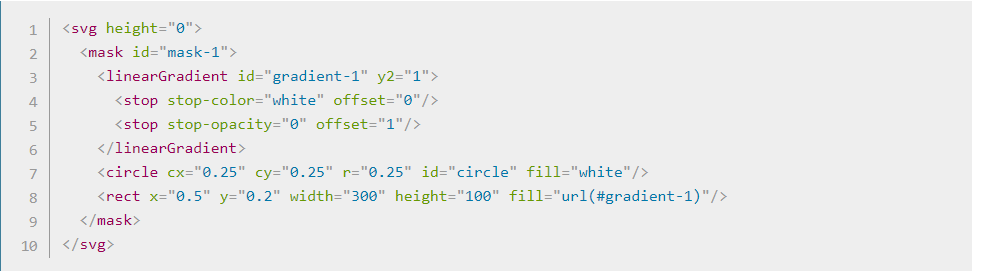
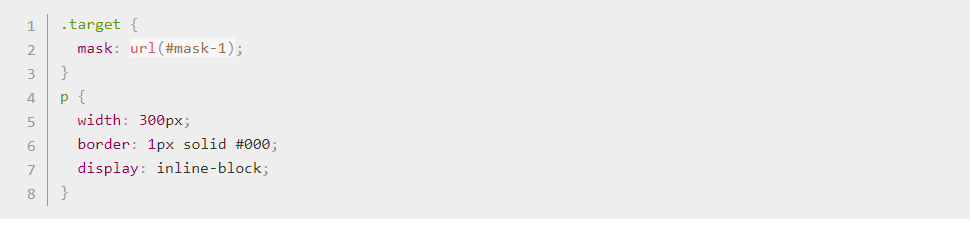
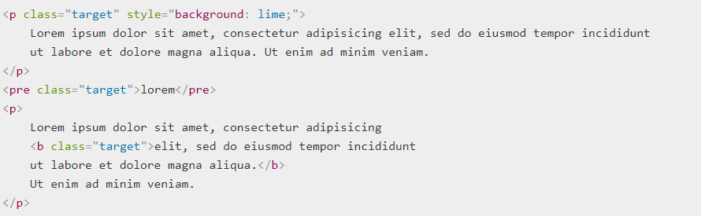
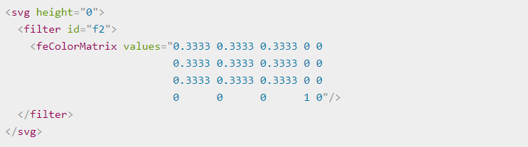
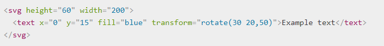

Modern browsers support using SVG within CSS styles to apply graphical effects to HTML content. You may specify SVG in styles either within the same document or an external style sheet. There are 3 properties you can use: mask, clip-path, and filter.
To apply an SVG effect using CSS styles, you first need to create the CSS style that references the SVG to apply.
<style>
p {
mask: url(#my-mask);
}
</style>
In the above example, all paragraphs are masked by an SVG <mask> with the ID my-mask.
For example, you can make a gradient mask for HTML content using SVG and CSS code similar to the following, inside your HTML document:
 This establishes a clipping area made of a circle and rectangle, assigns it the ID #clipping-path-1, then references it in the CSS. The clip path can be assigned to any element with the target class.
You can make changes to the SVG in real time and see them immediately affect the rendering of the HTML. For example, you can resize the circle in the clip path established above
function toggleRadius() {
var circle = document.getElementById("circle");
circle.r.baseVal.value = 0.40 - circle.r.baseVal.value;
}
This demonstrates applying a filter to HTML content using SVG. It establishes several filters, which are applied with CSS to three elements in both the normal and mouse hover states.
You could also apply a color matrix:
SVG effects can also be used to add a more dynamic and flexible approach to adding text compared to plain HTML text. By creating the text using SVG elements combined with HTML you can make a variety of different text effects. You can rotate the text:
